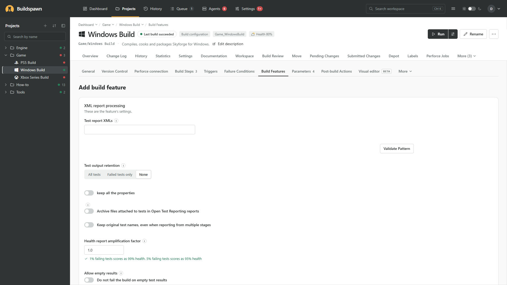

XML report processing
Reads test report files in JUnit format and shows the results on the build page.
When to use it
Use it when your test tool writes XML reports and does not already report to Buildspawn. Many tools can write this format: Unreal Automation, NUnit and C++ test libraries. You then get pass and fail counts, a trend, and the list of failed tests.

How to set it up
- Open the build configuration, click Settings, then Build Features. Click Add build feature and choose XML report processing.
- In Test report XMLs type the files to read, relative to the workspace, for example
Saved/Automation/*.xml. Use Validate Pattern to check it. - Choose the other options you need (see the table).
- Click Save.
Every field
| Field | What it does | Default | Example |
|---|---|---|---|
| Test report XMLs | The report files, as an Ant pattern. Several patterns are separated by commas. | Empty (a feature with no files shows a problem) | Saved/Automation/*.xml |
| Test output retention | How much standard output and error of the tests is kept. Long output of passing tests is cut by default to save disk space. | Standard | All |
| keep all the properties | Keep the properties of each test case. | Off | Off |
| Archive files attached to tests in Open Test Reporting reports | Archive files that tests attach, so they open from the page of each test. | Off | Off |
| Keep original test names, even when reporting from multiple stages | Do not add the stage name to the test names. | Off | Off |
| Health report amplification factor | How much failed tests lower the health of the build configuration. 0 turns it off; 1 means 10% failing gives 90% health. | 1.0 | 1.0 |
| Additional test report features | Extra publishers for the test data. | None | - |
| Do not fail the build on empty test results | Normally a build fails when no report file is found. Turn this on to allow it. | Off | Off |
| Skip publishing checks | Do not send the results to the checks of the code host. | Off | On |
| Checks name | The name used when results are sent to the checks of a code host. | Tests | Unit tests |
| Skip marking build as unstable on test failure | Report the failures but keep the build successful. | Off | Off |
| Skip report files older than build start | Ignore report files that existed before the build started. | Off | On |
A worked example
The Unit Tests build configuration of the Engine project runs RunTests.exe --report-xml Reports/tests.xml. The studio sets Test report XMLs to Reports/*.xml and turns on Skip report files older than build start, so an old report on a reused workspace never counts.
What you see when it runs
The build gets a Tests tab with the counts and the failed tests. A build with a failed test is Unstable (yellow), unless you skip that. Failure conditions can turn it into Failed.
Problems and fixes
| Problem | What to do |
|---|---|
| No test report files found | The pattern did not match. It is relative to the workspace. Check the folder and use Validate Pattern. |
| Results are counted from an old build | Turn on Skip report files older than build start. |
| The build is yellow, I want red | On Failure Conditions set Test failures to Failed. |